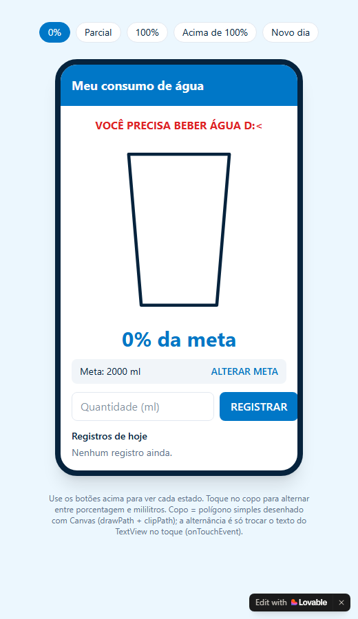
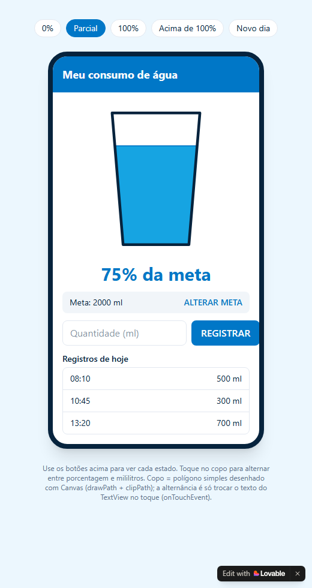
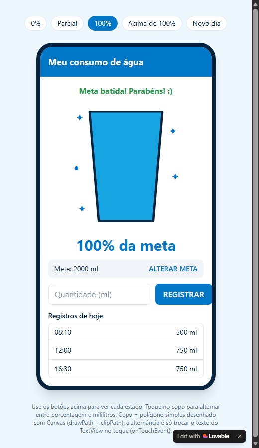
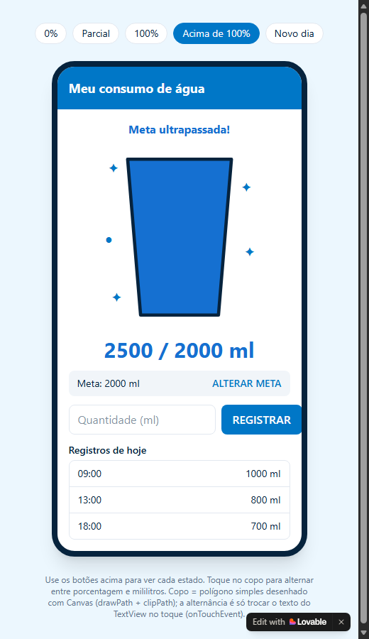

Aplicativo "Meu consumo de água" · Computação para Dispositivos Móveis Alunas: Glenda Santana e Letícia Almeida · Entrega e apresentação: 15/10/2026
Um app Android em Java que:
WaterProgressView, desenhada com Canvas, reutilizável, com atributos XML (progressColor, textColor, maxValue) lidos com TypedArray.| Item | Situação |
|---|---|
Projeto projeto-dispositivos-moveis-master |
Esqueleto Android Studio com MainActivity vazia (só "Hello World"), Java 11, tema Material3 DayNight, minSdk 33, targetSdk 37. Sem nenhuma classe própria ainda. |
Atividades de aula (GUIBasico) e slides 3 a 6 |
Não são considerados parte do trabalho pronto. Tudo será construído do zero neste repositório; servem só como referência de estudo. |
Do esqueleto aproveitamos apenas a configuração (Gradle, tema,
MainActivityeactivity_main.xmlde exemplo, que serão reescritos). Nenhuma lógica do app existe ainda.Observação: o projeto está aninhado (
projeto-dispositivos-moveis-master/projeto-dispositivos-moveis-master). O código vai dentro da pasta interna, que é a que tem obuild.gradle.kts.
Tela única, estilo Android com cabeçalho azul. Capturas do protótipo em cada estado:
| 0% | Parcial (75%) |
|---|---|
 |
 |
| 100% | Acima de 100% (modo ml) |
|---|---|
 |
 |
WaterProgressView): trapézio com contorno azul-marinho grosso; a água sobe proporcionalmente ao percentual, com uma linha mais escura na superfície. Em ≥100% aparecem brilhos (✦ ●) ao redor. Acima de 100% o copo fica cheio e a água muda para um azul mais escuro.75% da meta ou 1500 / 2000 ml (alterna ao tocar no copo). Fica azul escuro quando ultrapassa a meta.Meta: 2000 ml à esquerda e ALTERAR META à direita; ao tocar, vira campo numérico + SALVAR.Quantidade (ml) + botão azul REGISTRAR.08:10 — 500 ml); vazia mostra "Nenhum registro ainda."| Uso | Cor aproximada | Nome em colors.xml |
|---|---|---|
| Cabeçalho, botões, textos de destaque | #0077C8 |
primary |
| Água | #17A2E3 |
water |
| Água acima da meta / texto acima da meta | #1D6BCB |
water_over |
| Contorno do copo / texto principal | #082642 |
foreground |
| Alerta "beber água" | #D92D20 |
alert |
| Sucesso (meta batida) | #2E9E4F |
success |
| Fundo da tela | #EEF8FF |
background |
| Faixa da meta / bordas da lista | #F1F5F9 / #E2E8F0 |
secondary / border |
WaterProgressView. Então o título ("Consumo diário de água"), o copo e o texto 75% da meta / 1500 / 2000 ml são desenhados dentro do componente (no protótipo o texto está num TextView à parte).acumulado > meta), não sobre o percentual arredondado — assim 2001/2000 ml (que arredonda para 100%) já conta como ultrapassou.Poucas classes, cada uma com uma responsabilidade (ideia de MVC: Model / View / Controller = Activity).
com.example.projeto_dispositivos_moveis
├── MainActivity.java Controller: liga tela, componente e dados
├── model
│ ├── RegistroConsumo.java Model: um registro (ml + instante em millis)
│ └── ConsumoStorage.java Model: lê/grava no SharedPreferences, regras do dia
└── widget
└── WaterProgressView.java View customizada (a "biblioteca interna")
res/
├── layout/activity_main.xml
├── layout/item_registro.xml (uma linha da lista: horário + volume)
├── values/attrs.xml atributos do WaterProgressView
├── values/colors.xml, strings.xml, themes.xml
└── drawable/ (fundos arredondados dos campos/faixa, se necessário)
WaterProgressView — contrato público| Membro | Descrição |
|---|---|
Construtor (Context, AttributeSet) |
Lê progressColor, textColor, maxValue (+ opcionais overColor, title) com TypedArray e recycle() no finally, com obtainStyledAttributes(attrs, R.styleable.WaterProgressView, 0, 0). |
setMaxValue(int ml) |
Altera a meta em tempo de execução e reanima. |
setConsumo(int ml) |
Informa o acumulado; calcula percentual = ml * 100 / maxValue e chama setProgress. |
setProgress(int percentual) |
Método exigido. Aceita valores > 100 (sem limitar). Inicia o ValueAnimator do valor exibido atual até o novo e chama invalidate() a cada quadro. |
isAcimaDaMeta() |
true se acumulado > meta (usado também pela Activity). |
setModoAbsoluto(boolean) / alternância no toque |
performClick() inverte o modo; guardar o modo no próprio componente. |
onDraw (ordem de desenho):
1. Título "Consumo diário de água" no topo (drawText).
2. Copo: Path do trapézio → canvas.save() → clipPath(copo) → drawRect da água (altura = min(percentual,100)% do copo) → restore().
3. Linha de superfície da água (se 0 < p < 100).
4. Contorno do copo (Paint.Style.STROKE, traço grosso).
5. Brilhos ✦ ● se p >= 100.
6. Texto central: "75% da meta" ou "1500 / 2000 ml"; cor muda para water_over se acima da meta, e aparece a legenda "Meta ultrapassada!".
Cuidados técnicos:
- Criar os Paint e o Path uma vez (no construtor / onSizeChanged), não dentro do onDraw (criar o Paint dentro do onDraw funciona, mas aqui ele roda a cada quadro da animação).
- Calcular a geometria do copo em onSizeChanged com base em getWidth()/getHeight() (sem coordenadas fixas em pixels). Assim funciona com 200dp x 200dp ou qualquer outro tamanho.
- Tratar maxValue <= 0 (evitar divisão por zero).
- Valor exibido na animação é float; o texto mostra o inteiro arredondado.
Escolha: SharedPreferences.
Justificativa (para o texto da entrega e a defesa oral): os dados são poucos (uma meta, uma data e uma lista curta de registros de um único dia), sem consultas complexas nem relacionamentos.
SharedPreferencesé o mecanismo simples de pares chave-valor, é simples, privado ao app e mantém os dados após fechar o app. SQLite/Room seriam excessivos para esse volume.
Chaves (arquivo "ConsumoAgua", MODE_PRIVATE):
| Chave | Tipo | Conteúdo |
|---|---|---|
meta_ml |
int | Meta diária (padrão 2000) |
data_dia |
String | Dia dos registros no formato yyyy-MM-dd |
registros |
String | Lista serializada: instanteMillis:ml;instanteMillis:ml;... |
acumulado_ml |
int | Soma dos registros do dia (exigido pela avaliação) |
split(";")/split(":") — só String, Long.parseLong, Integer.parseInt; sem biblioteca nova.apply() a cada ação (registrar, alterar meta) — não só no onPause, para não perder dados se o app for encerrado.Regra do novo dia (ConsumoStorage.verificarNovoDia()):
1. Pegar a data de hoje (yyyy-MM-dd).
2. Se data_dia ≠ hoje → apagar registros, zerar acumulado_ml, gravar data_dia = hoje. A meta é mantida.
3. Chamar isso no onCreate e no onResume (cobre o caso de o app ficar aberto/em segundo plano passando da meia-noite).
ConsumoStorage (meta + acumulado).MainActivity, atualizarTela(), que sempre relê os valores do storage e atualiza tudo: componente, mensagem de status, lista, texto da meta. É chamado ao abrir, após registrar, após alterar a meta e no onResume.acimaDaMeta = acumulado > meta calculado ali, nunca guardado como flag solta. Alterar a meta para um valor maior → atualizarTela() recalcula → alerta some automaticamente.O trabalho está dividido em 7 etapas. Cada uma tem uma entrega concreta: algo que dá para abrir no emulador e ver funcionando (ou, na etapa de dados, algo que dá para provar com um teste). Só passamos para a próxima quando a anterior estiver "pronta quando…".
| Etapa | O que fica pronto | O que dá para ver / provar | Tempo |
|---|---|---|---|
| 1. Base do projeto | Projeto limpo, cores, textos e tema do protótipo | App abre com fundo azul-claro e cabeçalho azul "Meu consumo de água" | ≈ 2,5 h |
| 2. Copo desenhado | WaterProgressView desenhando título, copo, água e texto |
Um copo 75% cheio com "75% da meta"; mudar o XML muda cor, meta e tamanho | ≈ 4 h |
| 3. Copo "vivo" | Animação, alerta de ultrapassagem e alternância ao toque | Botões provisórios +500/−500 ml: a água sobe e desce suave; passa de 100% e fica azul-escuro; tocar alterna % ↔ ml | ≈ 4 h |
| 4. Dados que sobrevivem | Classes de modelo e armazenamento (meta, registros, acumulado, novo dia) | Gravar registros, fechar o app, reabrir: os valores voltam; trocar a data limpa os registros | ≈ 3,5 h |
| 5. Tela final (visual) | Layout completo igual ao protótipo, com dados de exemplo | Tela idêntica às capturas, mas ainda sem funcionar | ≈ 4 h |
| 6. Tudo ligado | MainActivity conectando tela, componente e dados |
App completo funcionando: registrar, alterar meta, alerta, persistência | ≈ 4 h |
| 7. Acabamento e defesa | Código comentado, README e ensaio | App sem erros, README com a justificativa da persistência, dupla pronta para explicar tudo | ≈ 5 h |
As etapas 2–3 (componente) e 4 (dados) não dependem uma da outra e podem ser feitas em paralelo. A etapa 5 só precisa da 2. A etapa 6 junta tudo.
Entrega: o esqueleto limpo, com a identidade visual do protótipo.
O que você vai ver no celular: tela com fundo azul-claro e uma faixa azul no topo com o texto "Meu consumo de água" em branco. Nada mais.
Arquivos criados ou alterados
- res/values/colors.xml — paleta da seção 3.2.
- res/values/strings.xml — todos os textos do app (título, botões, hints, mensagens de status e de erro, "Registros de hoje"…).
- res/values/themes.xml e values-night/themes.xml — tema claro (Theme.Material3.Light.NoActionBar).
- res/layout/activity_main.xml — remove o "Hello World!" e deixa só o cabeçalho.
- MainActivity.java — passa a tratar as bordas do sistema (EdgeToEdge.enable + insets), porque com targetSdk 37 o app desenha sob a barra de status.
- Pastas (pacotes) model e widget, vazias por enquanto.
Pronto quando
- o app compila e abre no emulador/celular (Android 13+);
- o cabeçalho não fica escondido atrás da barra de status;
- não há nenhum texto escrito direto nos layouts (tudo em strings.xml).
WaterProgressView estática)Entrega: a View customizada desenhando tudo na tela, ainda sem animação nem dados reais.
O que você vai ver no celular: o título "Consumo diário de água", um copo trapezoidal com contorno azul-marinho, água azul preenchendo 75% da altura, e o texto "75% da meta" abaixo. Se mudarmos app:maxValue, app:progressColor, app:textColor ou o tamanho (200dp, 150dp…) no XML, o desenho muda de acordo.
Consumo diário de água
┌──────────┐
│ │
│▒▒▒▒▒▒▒▒▒▒│ <- água (75%)
│▒▒▒▒▒▒▒▒▒▒│
└────────┘
75% da meta
Arquivos criados ou alterados
- widget/WaterProgressView.java (novo) — classe que estende View, lê os atributos do XML (TypedArray), calcula a geometria em onSizeChanged e desenha em onDraw: título → copo recortado com clipPath e preenchido com a água → contorno → texto.
- res/values/attrs.xml (novo) — progressColor, textColor, maxValue (+ overColor e title opcionais).
- Um layout provisório de teste usando o componente com 200dp x 200dp.
Pronto quando
- o componente aparece com wrap_content e com tamanhos fixos, sem cortar o desenho;
- valores fixos de 0%, 50%, 100% e 150% desenham corretamente o nível da água (acima de 100% o copo fica cheio, sem a água "vazar" para fora);
- os atributos do XML realmente alteram cores e meta.
Entrega: o comportamento completo do componente, ainda controlado por botões provisórios.
O que você vai ver no celular: a tela de teste tem dois botões "+500 ml" e "−500 ml". Ao apertar, a água sobe ou desce suavemente (cerca de meio segundo) e o texto muda. Ao passar de 100%, o copo fica cheio, a água muda para azul-escuro, aparecem brilhos ao redor e a legenda "Meta ultrapassada!". Ao tocar no copo, o texto alterna entre 125% da meta e 2500 / 2000 ml, mantendo o valor.
Arquivos alterados
- widget/WaterProgressView.java — ganha a API pública: setMaxValue(int ml), setConsumo(int ml), setProgress(int percentual) (exigido pela avaliação, aceita valores acima de 100), animação com ValueAnimator + invalidate(), regra "acima da meta" (consumo > meta, em ml), brilhos e legenda, alternância de modo no clique.
- Layout provisório de teste com os botões "+500/−500".
Pronto quando - a transição é animada, sem "pulos", mesmo com cliques rápidos seguidos; - 100% exato mostra brilhos mas sem alerta; 2001/2000 ml já mostra o alerta; - diminuir o consumo (ou aumentar a meta) faz o alerta desaparecer; - a alternância funciona abaixo, em e acima de 100%.
Entrega: as classes que guardam e recuperam tudo, incluindo a regra do dia.
O que dá para provar: uma tela provisória (ou testes JUnit) que grava meta e alguns registros, fecha o app e, ao reabrir, mostra os mesmos valores. Ao mudar a data do sistema para o dia seguinte, os registros somem e a meta continua.
Arquivos criados
- model/RegistroConsumo.java — um registro: volume em ml e instante (horário em milissegundos).
- model/ConsumoStorage.java — usa SharedPreferences (arquivo "ConsumoAgua") com as chaves meta_ml, data_dia, registros e acumulado_ml (seção 4.2). Métodos: ler/gravar meta, adicionar registro, listar registros, calcular acumulado e verificarNovoDia().
Pronto quando - meta, registros (volume + horário) e acumulado voltam idênticos após fechar e reabrir; - registros de um dia anterior são descartados e a meta é mantida; - dados vazios ou corrompidos não derrubam o app (retorna lista vazia).
Entrega: o layout completo, igual ao protótipo, preenchido com dados de exemplo.
O que você vai ver no celular: a tela das capturas da seção 3, de cima para baixo: cabeçalho azul → mensagem de status → WaterProgressView → faixa cinza "Meta: 2000 ml · ALTERAR META" → campo "Quantidade (ml)" + botão REGISTRAR → "Registros de hoje" com linhas como 08:10 — 500 ml. Os botões ainda não fazem nada.
┌─────────────────────────────┐
│ Meu consumo de água │ <- cabeçalho azul
├─────────────────────────────┤
│ Meta ultrapassada! │ <- status
│ (copo) │
│ 2500 / 2000 ml │
│ Meta: 2000 ml ALTERAR META │
│ [Quantidade (ml)] REGISTRAR │
│ Registros de hoje │
│ 09:00 1000 ml │
│ 13:00 800 ml │
└─────────────────────────────┘
Arquivos criados ou alterados
- res/layout/activity_main.xml — tela completa com ConstraintLayout na raiz (cada item preso ao anterior e às bordas); a lista de registros fica dentro de um ScrollView.
- res/layout/item_registro.xml — uma linha da lista (horário à esquerda, volume à direita).
- res/drawable/*.xml — fundos arredondados dos campos e da faixa da meta.
Pronto quando - a tela é visualmente parecida com as quatro capturas do protótipo; - não há textos cortados nem barras de rolagem horizontais; - a faixa da meta tem os dois estados prontos (leitura e edição), alternáveis por visibilidade.
Entrega: o aplicativo completo, cumprindo todos os requisitos da avaliação.
O que você vai ver no celular: digitar um volume e tocar em REGISTRAR faz a água subir, a linha aparecer na lista com o horário atual e o acumulado atualizar. Passar da meta acende o alerta na mensagem de status e no copo. Alterar a meta preserva os registros e recalcula tudo (o alerta some se deixar de valer). Fechar e reabrir mantém tudo.
Arquivos alterados
- MainActivity.java — liga as views, o componente e o ConsumoStorage. Um único método atualizarTela() relê os dados salvos e atualiza componente, mensagem de status, texto da meta e lista; é chamado ao abrir, ao registrar, ao alterar a meta e no onResume (junto com verificarNovoDia()).
- Validações com Toast: volume vazio, zero, não numérico ou absurdo (> 5000 ml); meta inválida (≤ 0 ou > 20000).
- Remoção da tela e dos botões provisórios das etapas anteriores.
Pronto quando - todos os 12 cenários do roteiro da seção 6 passam; - o app não fecha com nenhuma entrada inválida.
Entrega: um código que dá para explicar e um repositório pronto para entregar.
O que fica pronto
- comentários pertinentes nas partes difíceis (onDraw, clipPath, animação, regra de novo dia) e nomes claros e consistentes;
- giro de tela testado (sem erro, dados preservados);
- README.md com descrição do app, como executar e a justificativa da escolha de persistência (exigida no enunciado);
- ensaio da defesa, com as duas explicando qualquer parte do código.
Perguntas prováveis na defesa
- Por que estender View e não compor XML? O que são onDraw, Canvas e Paint?
- Para que servem attrs.xml, TypedArray e recycle()?
- Como o setProgress redesenha? O que faz o invalidate()? Como funciona a animação?
- Por que clipPath? Como valores acima de 100% são tratados?
- Por que SharedPreferences? Como a lista é gravada? Como o novo dia é detectado e o que é mantido?
- Como o alerta desliga ao alterar a meta? O que acontece com entradas inválidas?
Pronto quando: cada uma consegue explicar, sem consultar, o fluxo "registrar → gravar → atualizar tela → redesenhar o copo".
| # | Cenário | Resultado esperado |
|---|---|---|
| 1 | Primeira abertura | Meta 2000, 0%, copo vazio, mensagem vermelha "VOCÊ PRECISA BEBER ÁGUA D:<", "Nenhum registro ainda." |
| 2 | Registrar 500 ml | 25%, lista com horário atual e 500 ml, animação suave |
| 3 | Registrar até 2000 ml exatos | 100%, brilhos, mensagem verde "Meta batida!", sem alerta de ultrapassagem |
| 4 | Registrar +500 ml (2500) | 125%, copo cheio azul escuro, "Meta ultrapassada!" na tela e no componente |
| 5 | Tocar no copo | Alterna 125% da meta ↔ 2500 / 2000 ml; funciona também acima da meta |
| 6 | Alterar meta para 3000 | Registros mantidos, ~83%, alerta some |
| 7 | Alterar meta para 1000 | Alerta volta (250%) |
| 8 | Fechar totalmente o app e reabrir | Meta, registros e acumulado idênticos |
| 9 | Mudar a data do sistema para o dia seguinte e reabrir (ou voltar ao app) | Registros apagados, 0%, meta mantida |
| 10 | Entradas inválidas (vazio, 0, negativo, texto, número enorme) | Toast de erro, nada gravado, app não fecha |
| 11 | Componente em outro layout com 150dp e cor diferente | Renderiza proporcional, sem cortar |
| 12 | Girar a tela | Sem crash; dados preservados |
| Dia | Atividade |
|---|---|
| Qui 08/10 | Etapa 1 (base do projeto) |
| Sex 09/10 | Etapa 2 (copo desenhado) |
| Sáb 10/10 | Etapa 3 (copo "vivo") |
| Dom 11/10 | Etapa 4 (dados que sobrevivem) |
| Seg 12/10 | Etapa 5 (tela final) |
| Ter 13/10 | Etapa 6 (tudo ligado) e testes |
| Qua 14/10 | Etapa 7 (acabamento, README, ensaio): dia de folga para imprevistos |
| Qui 15/10 | Entrega e defesa |
Divisão sugerida: uma pessoa nas Etapas 2–3 (componente) e a outra nas Etapas 4–5 (dados e layout); a Etapa 6 em dupla, já que é onde as partes se encontram.